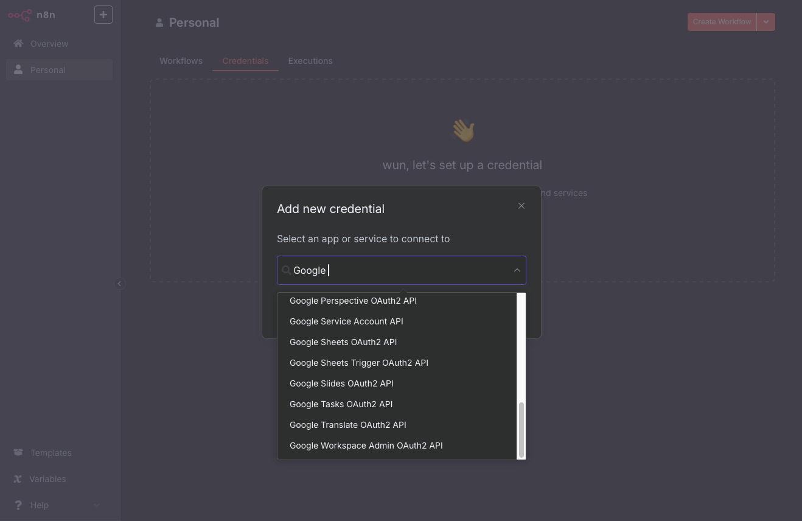
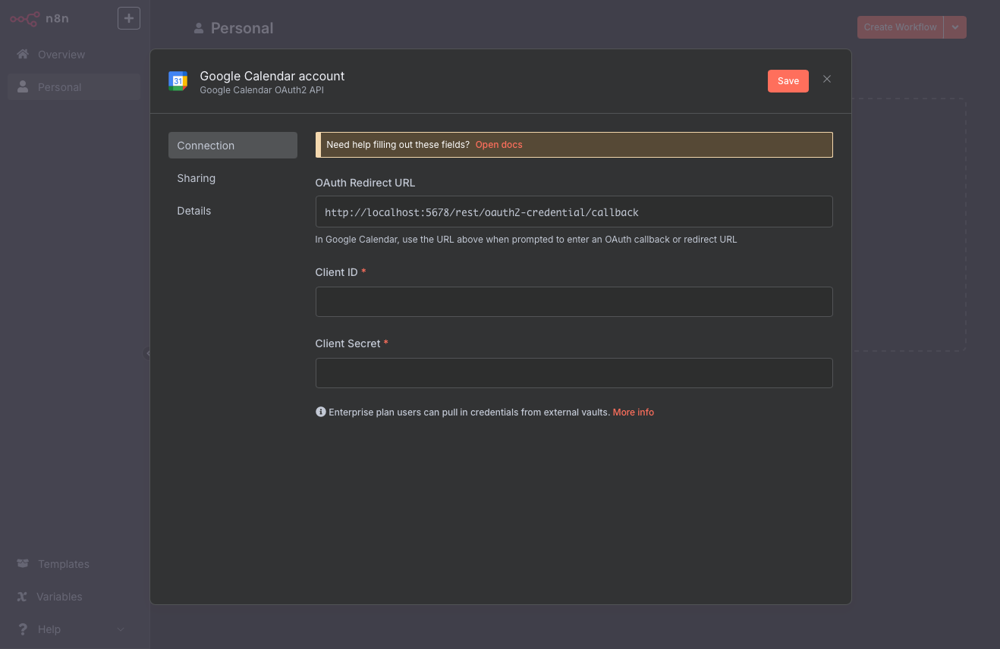
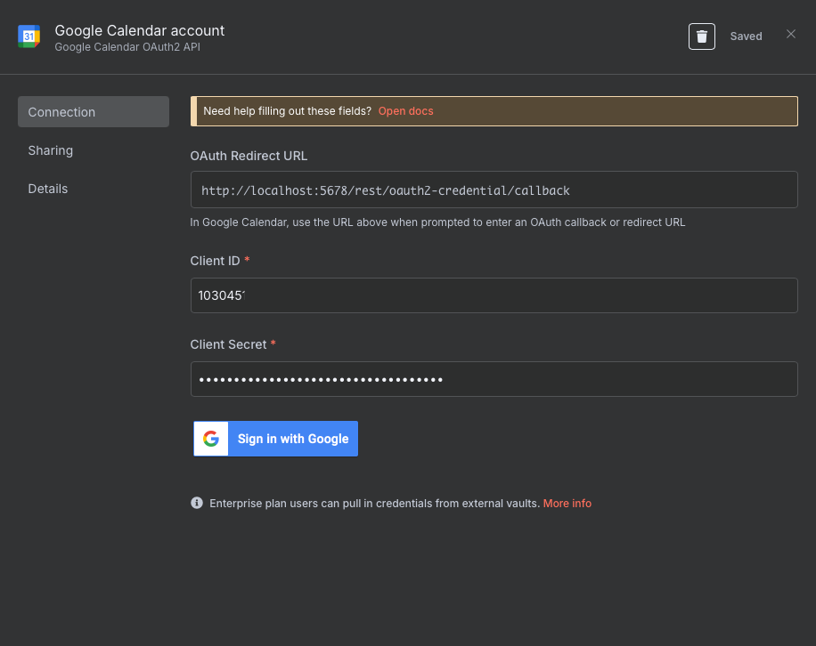
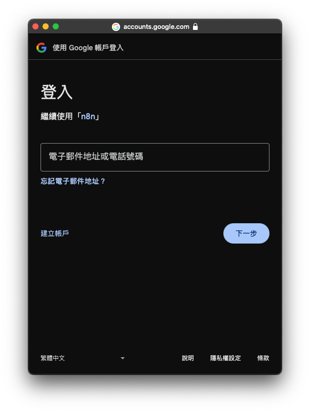
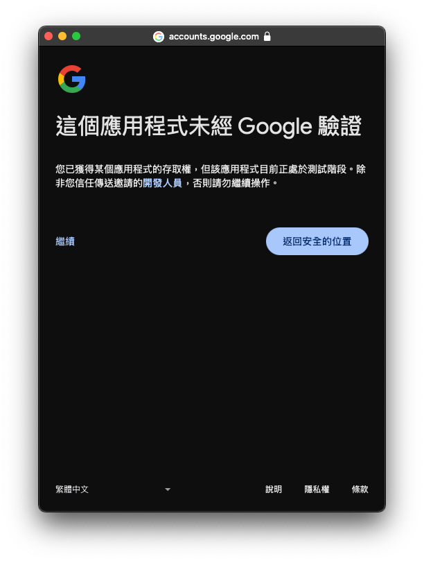
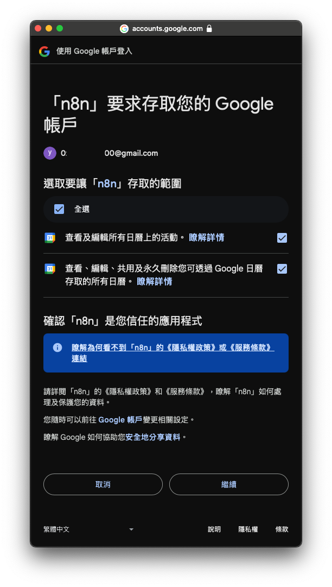
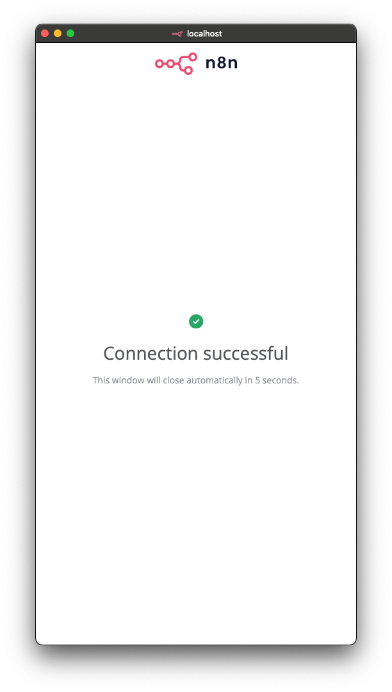

在這篇筆記中，將紀錄如何在 n8n 中設定 Google OAuth2 認證，以串接像是 Google Sheets、Gmail 或 Google Drive 等服務。
最後也加上在設定過程中可能會遇到的常見錯誤，尤其是在 自架環境 中非常容易發生的 redirect_uri_mismatch 問題，並提供解法。
📦 你需要準備的環境
- 已運行中的 n8n（本機或雲端部署均可）
- Google 帳號
- Google Cloud Console 存取權限
在 Google Cloud Console 建立 OAuth2 憑證
- 前往 Google Cloud Console
- 建立一個專案（或使用現有專案）
- 到
API 和服務 > 憑證
- 點「建立憑證 > OAuth 用戶端 ID」

👉 若首次設定會要求填寫「OAuth 同意畫面」：
- 使用者類型：選「外部」

- 填寫應用名稱、支援信箱

- 可略過 Scopes 設定（或先加入基本 openid/email/profile）
- 加入測試用戶（輸入你自己的 Gmail）

然後建立 OAuth 用戶端 ID：
-
應用類型：網頁應用程式

-
名稱隨便填

-
在「授權的重定向 URI」中新增：
http://localhost:5678/rest/oauth2-credential/callback
完成後會得到：
- Client ID
- Client Secret

🔧 在 n8n 中新增 Google OAuth2 憑證
- 登入 n8n

- 到左側選單 → Credentials
- 點「New credential」，搜尋並選擇：
- Google Sheets OAuth2、Gmail OAuth2、Google Drive OAuth2…等

- Google Sheets OAuth2、Gmail OAuth2、Google Drive OAuth2…等
- 點「Create New」，填入以下欄位：
| 欄位名稱 | 說明 |
|---|---|
| Client ID | 從 Google 複製 |
| Client Secret | 同上 |
| Scopes | 依服務填寫，例如 Google Sheets 是 https://www.googleapis.com/auth/spreadsheets |
n8n 會自動產生 Redirect URL，請複製並貼回 Google Cloud Console 設定中。


- 填完 Client ID 與 Client Secret 後點「 Sign in with Google」, 輸入帳號

- 登入 Google 授權會顯示應用程式未經驗證，因為是綁定我們自己架設的 n8n 服務，所以選擇繼續

- Google 顯示 n8n 要求存取帳戶，需要勾選「全選」再按下繼續

- 授權完成後，你的憑證就建立好了！

✨ 常用 OAuth2 Scopes 快查
| Google 服務 | Scope |
|---|---|
| Google Sheets | https://www.googleapis.com/auth/spreadsheets |
| Google Drive | https://www.googleapis.com/auth/drive |
| Gmail 發信 | https://www.googleapis.com/auth/gmail.send |
🧠 延伸說明：解決 redirect_uri_mismatch 錯誤
什麼是
redirect_uri_mismatch錯誤？
redirect_uri_mismatch是 OAuth 2.0 流程中的一種常見錯誤。當 Google 在認證過程中發現傳入的回調 URI 與註冊的回調 URI 不匹配時，就會顯示這個錯誤。這樣的情況通常出現於以下幾種情況：
- 回調 URI 在 Google Cloud Console 中的設置與 n8n 中使用的 URI 不一致。
- 使用 Docker 容器運行 n8n 時，
localhost和容器的網絡配置未正確處理。
在 Docker 中部署 n8n 時，很容易遇到以下錯誤：
Error 400: redirect_uri_mismatch
這是由於 Google 認證流程中的 回調 URI 與你在 Google Console 設定的不一致所導致。
🔍 原因一：Docker 網路路徑問題
n8n 在容器中使用 localhost 時，實際上指的是容器內部，而非主機的 localhost，因此會導致 URI 不匹配。
✅ 解法
-
在 Google Cloud Console 設定以下 URI：
http://host.docker.internal:5678/rest/oauth2-credential/callback -
在本機 n8n 介面上登入並驗證，Google 就能正確回傳 Token。
⏳ Google 設定可能有延遲
修改回調 URI 或應用設定後，Google 的設定可能需要 5 分鐘到數小時 才會完全生效。建議修改設定後耐心等待幾分鐘再進行認證測試。
🧹 清除瀏覽器緩存
有時候 OAuth 的快取也可能影響流程，建議進行以下操作：
- 清除 cookies 與快取
- 改用無痕模式
- 改用另一個瀏覽器
🔐 確保 Client ID / Secret 是最新的
若你重新產生過憑證，記得到 n8n 中更新對應欄位，否則也會出現驗證錯誤。
✅ Google OAuth 認證 Checklist
| 項目 | 狀態 |
|---|---|
| Google OAuth2 憑證已建立 | ✅ |
| Redirect URI 正確設定 | ✅ |
| Docker 使用 host.docker.internal | ✅ |
| 等待設定生效 | ⏳ |
| 清除快取與 Cookie | ✅ |
| Client ID / Secret 正確 | ✅ |
✨ 常用 OAuth2 Scopes 快查
| Google 服務 | Scope |
|---|---|
| Google Sheets | https://www.googleapis.com/auth/spreadsheets |
| Gmail 發信 | https://www.googleapis.com/auth/gmail.send |
| Google Drive | https://www.googleapis.com/auth/drive |
🔍 進階測試（可選）
可以使用 Postman 或其他 REST 工具測試 Google OAuth 流程，以排除是否為 n8n 端的問題。
🧩 小結
整合 Google OAuth2 到 n8n 是非常強大且實用的功能，無論你要串接 Google Sheets 做資料收集，或是使用 Gmail 寄送自動通知郵件，都可以用這個流程完成。如果你遇到 redirect_uri_mismatch 錯誤，只要依照本文的步驟修改 URI 設定，大多數情況下都能順利解決。